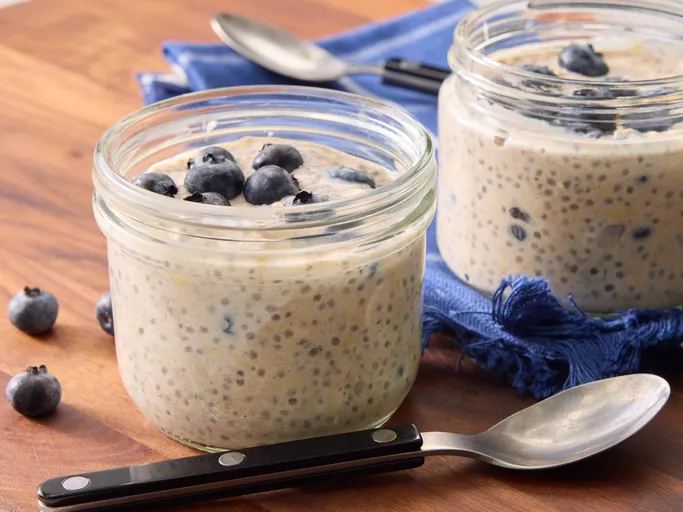

Go back
Easy Overnight Oats

I love this overnight oats recipe! It's easy to make-ahead for a quick, on-the-go breakfast. You can add-in your favorite toppings, fruit, or nuts.
Looking for a make-ahead breakfast that’ll keep you full until lunch? Try overnight oats with yogurt!
Easy Overnight Oats Ingredients
- Milk
- Yogurt
- Oats
- Honey
- Chia seeds
- Cinnamon
- Berries
How to Make Lasagna Step-By-Step
- Combine all the ingredients (besides the fruit) in a jar, seal, and shake.
- Open the jar and fold in the fruit.
- Seal the jar and refrigerate overnight.